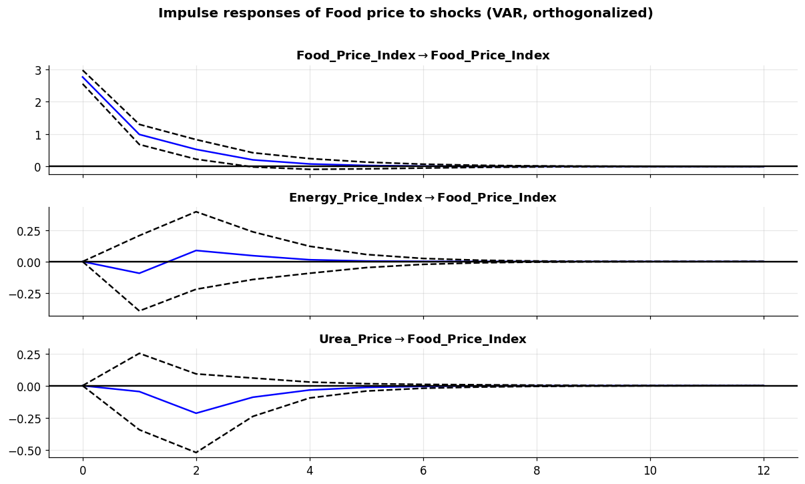

Part 5 — Advanced Statistical & Multivariate Models
Series:Time Series Analysis in Python — from Statistical Modeling to Machine Learning
Part 4 closed with two loose ends. First, its ARIMA residuals were heavy-tailed and volatility-clustered — the mean was captured but the variance was not. Second, the only thing that improved the forecast was exogenous information (energy), yet a univariate model has no way to use another series’ dynamics. Part 5 resolves both, and broadens the classical toolkit to its full extent.
What you will learn
Volatility modelling — ARCH/GARCH for the changing variance Part 4 diagnosed
State-space models & the Kalman filter — Unobserved Components, a model-based decomposition
VAR — vector autoregression: many series predicting each other, with impulse responses and Granger causality
Cointegration & VECM — modelling a long-run equilibrium between non-stationary series
Prophet — a decomposable additive model (trend + seasonality + holidays)
A benchmark of these advanced methods against Parts 3–4’s winners
Dataset & continuity
Still monthly_price.csv (356 months, 1992–2021), same 24-month hold-out on the Food Price Index. New libraries: arch (GARCH) and prophet, alongside statsmodels for the state-space and multivariate machinery.
The classical families we’ve met each describe one aspect of a series:
ETS / smoothing (Part 3) — components (level, trend, season) of the mean.
ARIMA (Part 4) — autocorrelation of the mean.
Part 5 adds three orthogonal capabilities:
GARCH models the variance, not the mean — for series whose volatility itself moves (finance, prices in crisis).
State-space / VAR / VECM move from one series to a system of series, capturing how they drive each other and share long-run equilibria.
Prophet re-imagines decomposition as a flexible, automatic additive regression — a pragmatic default for business data.
Together they turn “energy seems to matter for food” into models we can actually estimate and interpret.
2. Volatility modelling — ARCH & GARCH
Part 4’s residual diagnostics showed volatility clustering: calm stretches and turbulent stretches (2008, 2020), with heavy tails. Standard ARIMA assumes constant variance and cannot represent this. ARCH/GARCH models the conditional variance as itself a time series.
Volatility models work on returns, not levels. We use monthly log-returns of the Food Price Index (×100 for percentage points).
GARCH(p,q): add dependence on recent past variances — far more parsimonious: \(\sigma_t^2 = \omega + \alpha\,\varepsilon_{t-1}^2 + \beta\,\sigma_{t-1}^2\).
First, a formal check that ARCH effects even exist — the ARCH-LM test (H₀: no ARCH effect).
The test decisively rejects constant variance, so we fit a GARCH(1,1) with a Student-t error distribution (to accommodate the heavy tails Part 4 found).
Mean Model
========================================================================
coef std err t P>|t| 95.0% Conf. Int.
------------------------------------------------------------------------
mu 0.0234 0.166 0.141 0.888 [ -0.302, 0.348]
========================================================================
The key parameters are α (reaction to the last shock) and β (persistence of past variance). Their sum α+β measures how long volatility shocks linger — close to 1 means very persistent. Let’s plot the estimated conditional volatility: the model’s month-by-month view of risk.
The volatility envelope widens exactly at the crises and narrows in calm periods — precisely the clustering ARIMA could not capture. GARCH is what you add when you care about risk and interval width, not just the point forecast; it also produces a variance forecast that fans out realistically.
ARCH-LM on standardized residuals p-value: 0.664 -> clustering removed ✓
3. State-space models & the Kalman filter
A state-space model describes a series as noisy observations of unobserved states — a level, a trend, a seasonal pattern — that evolve stochastically over time. The Kalman filter is the recursive engine that estimates those hidden states: at each step it predicts the next state, then updates the prediction with the new observation, balancing the two by their relative uncertainty. This framework actually generalizes both ETS and ARIMA (statsmodels fits them all as state-space models under the hood).
The Unobserved Components model lets us specify the pieces directly. We fit a local linear trend + stochastic seasonal model — a model-based cousin of the STL decomposition from Part 2, but one that yields forecasts and uncertainty.
The filter recovers a smooth level, a slowly-varying trend (its slope swings positive into 2008 and negative afterwards — the boom and bust as a single evolving parameter), and a small seasonal term consistent with the light seasonality we’ve seen throughout. Forecasting is a natural extension of the same recursion, with prediction intervals from the state uncertainty.
Everything so far modelled one series. A VAR models a system: each variable is regressed on lags of itself and every other variable, so the model captures how the series feed back on one another. VAR requires the inputs to be stationary, so — as in Part 2 — we work with log-returns.
We build a three-variable system that carries Part 4’s thread forward: Food, Energy, and Urea (fertilizer) prices.
A VAR’s most illuminating output is the impulse response: if one variable receives a one-time shock, how do all the variables respond over the following months? The shaded bands are confidence intervals — where they straddle zero, the response is not statistically distinguishable from nothing.
irf = var_res.irf(12)fig = irf.plot(orth=True, response="Food_Price_Index", figsize=(11, 6.5), signif=0.05)fig.suptitle("Impulse responses of Food price to shocks (VAR, orthogonalized)", fontweight="bold", y=1.01)plt.tight_layout(); plt.show()

Granger causality — predictive precedence
Granger causality asks a precise question: does the past of X help predict Y beyond Y’s own past? If yes, X “Granger-causes” Y. Crucially this is predictive precedence, not mechanism — it does not prove X causes Y in any physical sense. We test both directions.
The result is a useful surprise and a caution against assuming direction. In this monthly system, energy does not Granger-cause food returns, nor does urea — yet food does Granger-cause energy. Two lessons:
The contemporaneous benefit of energy in Part 4’s SARIMAX (same-month energy helped) is a different thing from lagged predictive causality; past energy months don’t add much once food’s own history is known.
Granger direction can run opposite to intuition and must never be read as a causal mechanism — here food prices statistically lead energy, which may reflect common macro drivers rather than food “causing” energy.
5. Cointegration & the Vector Error Correction Model (VECM)
Differencing to reach stationarity (VAR) throws away information about a long-run equilibrium. Two non-stationary series are cointegrated if some linear combination of them is stationary — they can wander individually but are tethered together over the long run (classic examples: spot and futures prices, or related commodity prices). When series are cointegrated you should not just difference them; a VECM models the short-run changes and an error-correction pull back toward equilibrium.
The three fertilizer prices are natural candidates — they share cost drivers and should not drift apart forever. We test with Engle–Granger (pairwise) and Johansen (system-wide).
fert = np.log(df[["Urea_Price", "TSP_Price", "MP_Price"]])print("Engle–Granger cointegration p-values (H0: NOT cointegrated):")for a, b in [("Urea_Price","TSP_Price"), ("Urea_Price","MP_Price"), ("TSP_Price","MP_Price")]:print(f" {a:12s} ~ {b:12s}: p = {coint(fert[a], fert[b])[1]:.4f}")fe = np.log(df[["Food_Price_Index", "Energy_Price_Index"]])print(f"\nFor contrast — Food ~ Energy: p = {coint(fe.iloc[:,0], fe.iloc[:,1])[1]:.4f}"" (not cointegrated)")
Engle–Granger cointegration p-values (H0: NOT cointegrated):
Urea_Price ~ TSP_Price : p = 0.0120
Urea_Price ~ MP_Price : p = 0.0065
TSP_Price ~ MP_Price : p = 0.0000
For contrast — Food ~ Energy: p = 0.4113 (not cointegrated)
The fertilizers cointegrate; food and energy do not — which retroactively explains why the food/energy link in Part 4 was contemporaneous rather than a stable long-run tie. The Johansen test tells us how many independent cointegrating relationships (the rank) the fertilizer system has.
H0: rank <= r trace stat crit 95% reject H0
r = 0 67.21 29.80 yes
r = 1 24.99 15.49 yes
r = 2 2.73 3.84 no
Selected cointegration rank = 2
A rank of 2 means the three fertilizer prices are bound by two long-run equilibrium relationships — they move largely as a tethered group. We fit a VECM at that rank and read its error-correction (“loading”) coefficients, α, which measure how strongly each series is pulled back toward equilibrium after a deviation.
vecm = VECM(fert, k_ar_diff=2, coint_rank=int(rank), deterministic="ci").fit()alpha = pd.DataFrame(vecm.alpha, index=fert.columns, columns=[f"EC{i+1}"for i inrange(int(rank))]).round(3)print("Error-correction (adjustment) coefficients α:")print(alpha)print("\nNegative, significant α means the series actively corrects back toward""\nthe long-run equilibrium when it drifts away.")
Error-correction (adjustment) coefficients α:
EC1 EC2
Urea_Price -0.099 0.068
TSP_Price 0.023 -0.032
MP_Price 0.001 0.096
Negative, significant α means the series actively corrects back toward
the long-run equilibrium when it drifts away.
VECM is the right structure whenever a unit-root test says “non-stationary” but the series clearly track each other — differencing alone would discard the equilibrium that carries much of the signal.
6. Prophet — decomposable additive forecasting
Prophet (from Meta) takes the decomposition idea from Part 2 and turns it into an automatic, robust additive regression:
\[y(t) = g(t) + s(t) + h(t) + \varepsilon_t\]
with a piecewise-linear trend\(g(t)\) (with automatically detected changepoints), Fourier-series seasonality\(s(t)\), optional holiday effects \(h(t)\), and noise. It is designed for analysts: sensible defaults, tolerant of missing data and outliers, and forecasts with uncertainty out of the box. Prophet wants a two-column frame — ds (date) and y (value).
Prophet’s great convenience is the automatic component breakdown — trend with detected changepoints, plus the seasonal shape — which makes it easy to explain a forecast to non-specialists.
The trend panel shows Prophet’s piecewise-linear fit bending at detected changepoints; the yearly panel is the learned seasonal shape. On this dataset the seasonal amplitude is again modest — the same story every method has told.
7. Benchmark — advanced methods vs. the prior winners
We add the point-forecasting members of this part — Unobserved Components, VAR, and Prophet — to the same 24-month Food Price Index hold-out, next to Part 3’s ETS, Part 4’s ARIMA, and the Drift baseline.
For the VAR (fitted on log-returns) we forecast the food-return path and reconstruct the level by cumulating from the last observed value — the honest way to score a differenced model on the original scale.
The VAR is the strongest model here — using energy’s and urea’s dynamics helps a little, edging out the univariate ETS/ARIMA — but it still sits beside the Drift baseline, because none of these methods foresees the 2020–21 surge.
Unobserved Components and Prophet score worse than the simpler models: their explicit trend+seasonal structure is confidently projected in the wrong direction across the shock. More structure is not automatically better.
The consistent verdict across Parts 3–5 is that this shock-driven series has little exploitable structure at a 24-month horizon — a conclusion each family reaches independently, which is itself the finding.
Each advanced tool earns its place for a different reason than raw accuracy here: GARCH for honest risk/intervals, VAR/VECM for understanding interdependence and equilibria, state-space for interpretable evolving components, Prophet for fast, explainable defaults.
8. Exercises
GARCH on the VIX. Fit a GARCH(1,1) to VIX_Index log-returns. Is volatility more or less persistent (α+β) than for food prices?
Components model. Fit an Unobserved Components model with a stochastic cycle added to Energy_Price_Index. Does the cycle capture the boom/bust?
Bigger VAR. Build a 4-variable VAR (add Maize_Price) and re-run the Granger tests. Do any new predictive links appear?
VECM forecast. Use the fitted fertilizer VECM to forecast Urea_Price 24 months ahead; reconstruct the level and compare RMSE to an ARIMA on Urea alone.
Prophet changepoints. Refit Prophet with changepoint_prior_scale=0.5 (more flexible trend). Does the more reactive trend help or hurt the hold-out?
GARCH models a time-varying variance (volatility clustering) that ARIMA assumes away — essential for risk and realistic intervals; check need with the ARCH-LM test and verify the standardized residuals are clean afterwards.
State-space / Unobserved Components express a series as evolving hidden states estimated by the Kalman filter — a model-based decomposition that generalizes ETS and ARIMA and yields interpretable components with uncertainty.
VAR models a system of stationary series; impulse responses trace how shocks propagate, and Granger causality tests predictive precedence — which is not mechanism, and can run in a surprising direction.
Cointegration (Engle–Granger, Johansen) detects a long-run equilibrium between non-stationary series; when present, model it with a VECM, not by blind differencing.
Prophet is a robust, decomposable additive model with automatic changepoints and seasonality — an excellent explainable default, not automatically the most accurate.
On our shock-driven hold-out the VAR narrowly leads the models while still matching the baseline; the durable lesson is that structure must be justified, and each advanced tool answers a different question than “lowest RMSE.”
What’s next — Part 6: Evaluation, Backtesting & Baselines
We have quietly relied on a single train/test split for five parts. Part 6 makes evaluation rigorous: proper time-series cross-validation (expanding vs. sliding windows), walk-forward backtesting, the leakage traps that invalidate results, and the full metric set (MASE, sMAPE, pinball loss for intervals). It is the foundation the machine-learning and deep-learning parts (7–10) will stand on.